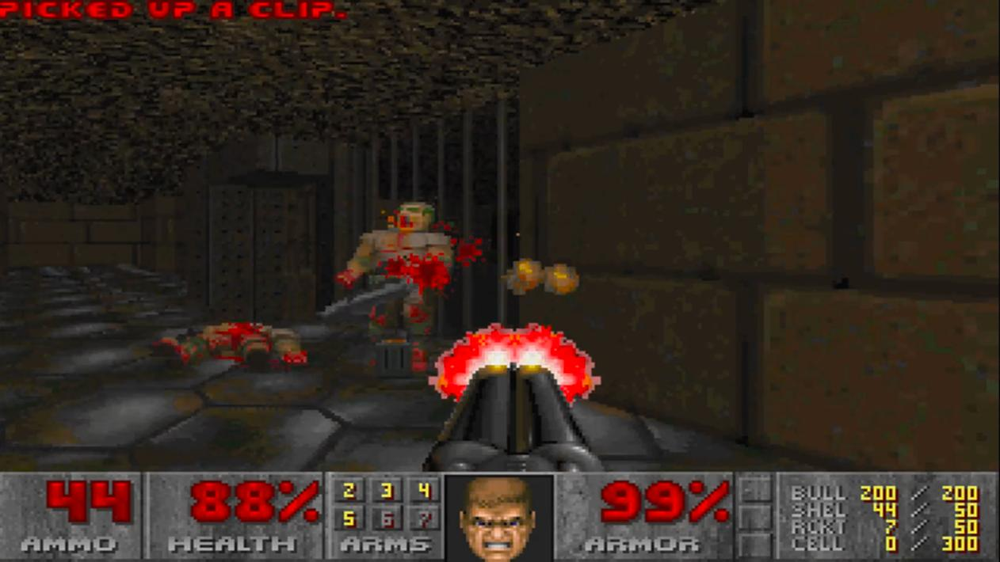
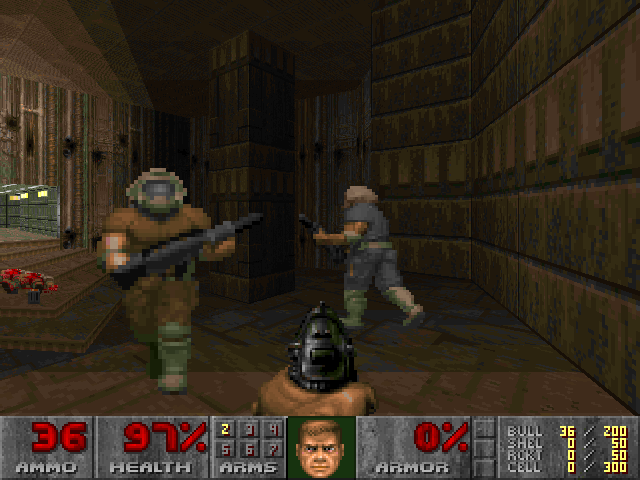
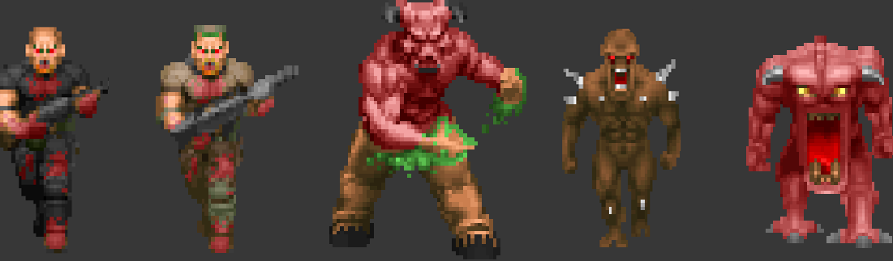
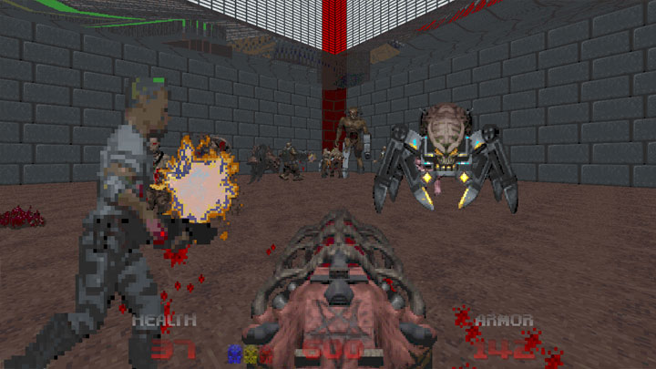

The game
Doom
Doom is a first-person shooter game developed by id Software for MS-DOS in 1993. The player takes the role of an unnamed space marine that fight hordes of demons from Hell, in a science fiction and horror scenario.
Description
The player has to go through a series of levels set in military bases on the moons of Mars and in Hell. To finish a level the player must explore the area to find a marked exit room while walking a map is filled with the location you went through. The levels are grouped into episodes and the last level features a boss fight where the player has to face an enemy stronger than the others encountered before. The enemies are demons and possessed undead humans that the player fights using different weapons. During the game, the player must manage ammunition, health and armour. There are 5 difficulty levels: those manage the amount of damage done by enemies, the speed of their movements and if they respawn.
Why is Doom so well known?
It was one of the first videogames rated M for Mature due to his violence and explicit content. It was also criticized by groups for the content of satanic imagery. Doom introduced the fear that the new technology used in videogames led to more realistic simulations that could influence people making them more confident using violence. It's a challenging game that requires the player to be concentrate to complete a level but is also nice to play just for having fun, so a lot of people loved it. It was also one of the first FPS genre games.
Innovations
Introduction
The fact that Doom was played by millions of people promoted the emerging FPS genre. However, the term FPS was lately introduced and the firsts videogames that followed this structure were called "Doom clones". This game pioneered online distribution, 3D graphics, networked multiplayer gaming and custom modifications via packaged files (WADs).
Multiplayer
Deathmatching between players became attractive due to the large distribution of PC systems and the violence of this game, so players started playing one against the other in different ways: over phone line using a modem or by linking two PCs with a null-modem cable.
Graphic
The levels are presented in 3D perspective but the enemies and the objects are 2D sprites presented from several angles. This technique is called 2.5D graphics. For this generation, this kind of new graphic was a huge innovation and had a big impact on the games that were afterwards developed.
Mods
It is possible to modify the game creating custom levels using WAD files. This feature generated a large community that started making mods. The mod files also allow to create and modify creatures, weapons and even the sounds.
Play the game
Now you have two choices, you can watch the gameplay below or click this link and play the game :)